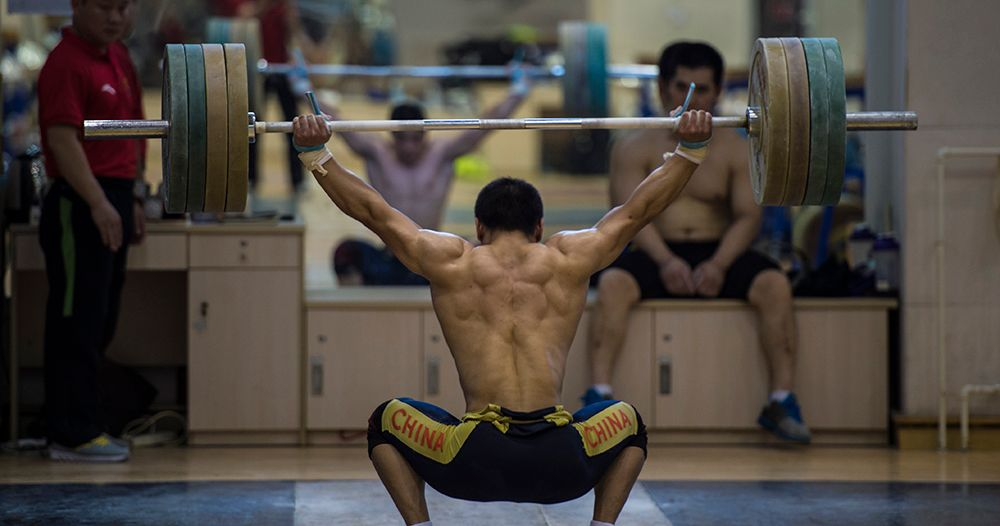

Verkefni5
Meðfylgjandi verkefninu er .zip skrá með 2 vefsíðum sem þú átt að tengja saman. Normalize.css stílsíðan fylgir með en aðal stílsíðuna vantar. Þú átt að búa hana til og tengja við vefsíðurnar. Skipulag síðunnar á að vera svipað því sem sýnt er hér á vefsíðunni en lita- og leturval er frjálst
Þegar skjár er minni en 60em (960px) þá á textinn í vefsíðunni að dragast saman og vera sýnilegur, prófaðu að nota stílbragðið "max-with".
Ég hef nú ekki mikið af Áhugamál til að segja en það eru samt nokkur til dæmis. Mér finnst gaman að spila tölvuleikir, fera með fjölskyldu mína, fara veiða lax með pabba minn, ferðast og búa til vefsíður (eins og þessi) og kóða til dæmis með python. Maður getur sagt að hef nokkur Áhugamál.
bara minna á þetta er ekki ég
© 2019 ---